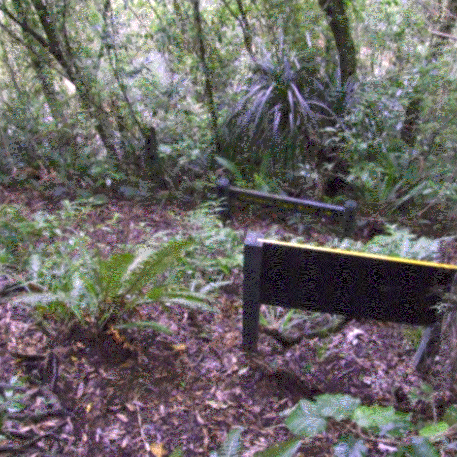

--- enter
==> [once] intro
--- intro
[cont] Traveler...! Look over here! {who are you?}
[cont] Welcome to our forest. I'm the Assistant. If you ever need guidance, click on my window & we can talk. {thank you}
[cont] Let's get you acquainted with some of the other forest denizens. {sure thing}
[cont] I'll be here with you the entire way. I've lived here for years and years. I can guide you.{that sounds useful}
[cont] I'm a good friend to have.{a handsome one, too}
==> click
--- click
Go explore, meet some of the park dwellers. {Cancel}
==> click